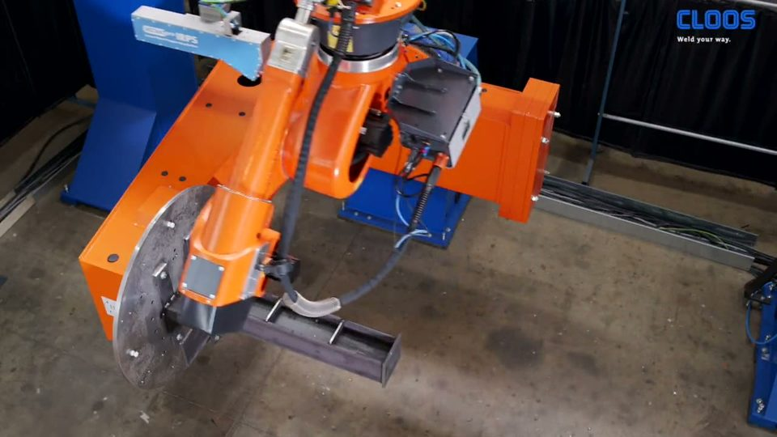
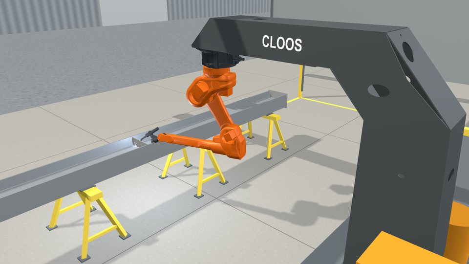

0:42
CLOOS
Small part on a table: set up on screen, then welded
Limit Square edges and corners.
powered by CLOOS RoboScan
For structural steel shops
Videos, limits and a 5 step walkthrough. Start with what it can't do. Then see what it does.

Each video shows a limit to keep in mind.
CLOOS
Limit Square edges and corners.
CLOOS
Limit Nothing in the scan shadow. Only what the laser can see is found.
CLOOS
Limit One robot per scanner.
CLOOS
Limit Clean steel: no scale, rust, grease or oil. Ground or polished surfaces are excluded.
CLOOS
Limit The track must be longer than your longest part.
YouTube
Limit It does not detect bevels, grooves or root gaps.
Watch on YouTubeYouTube
Limit Standard connections only. Combinations are confirmed case by case.
Watch on YouTubeWhat it welds
| Profile | Range | Inches |
|---|---|---|
| HEA, HEB, HEM | 100 to 1000 mm | 4 to 39 in |
| IPE | 80 to 1000 mm | 3 to 39 in |
| UNP channel | 80 to 400 mm | 3 to 16 in |
| Square and rectangular tube | 20 to 250 mm | 0.8 to 10 in |
| Angle | 30 to 200 mm | 1.2 to 8 in |
| Tee | T20 to T140 | 0.8 to 5.5 in |
| Size | Layers | AWS leg |
|---|---|---|
| a3 to a6 | Single layer fillet | 3/16 to 5/16 in leg |
| a8 to a15 | Two to six layers | 7/16 to 13/16 in leg |
Top and bottom chords of I or H beam, with square tube diagonals between them. Rectangular plates are welded to the chords. It uses the same scanner and cell, with its own connection library.
Upper and lower rails, and posts with a mounting plate. Infill can be vertical or horizontal, in flat bar, round, rectangular, square or edge set tube. Corner, tee, cross and through-pass joints. Infill angle within 45 degrees either way. Flat bar from 0.20 in (5 mm). Tube to tube is not possible.
A rectangular grid of bearing and cross bars with edge banding around it. Sheet from 0.08 in (2 mm) and round bar from 0.20 in (5 mm). Part IDs and sizes can come from your order database by barcode. All parts stand square to the panel.
Every part still goes through the limits first. See what it can't do
Start here
Check every part against this page before anyone quotes it. Even if every box is ticked, send a drawing or photo. CLOOS Americas confirms the fit before any quote.
Step 1 of 5
Step 2 of 5
CLOOS
Limit Square edges and corners.
CLOOS
Limit Nothing in the scan shadow. Only what the laser can see is found.
YouTube
Limit It does not detect bevels, grooves or root gaps.
Watch on YouTubeStep 3 of 5
CLOOS
Limit One robot per scanner.
CLOOS
Limit Clean steel: no scale, rust, grease or oil. Ground or polished surfaces are excluded.
Step 4 of 5

3D Walk through the cell in 3D Set the beam, scan, check, weld. Illustration, not to scale. Open the 3D cellCLOOS
Limit The track must be longer than your longest part.
Step 5 of 5
Goes to Casey Janes, JPS International.
CLOOS Americas
Cameron Montbriand
Pre-sales Application Engineer, CLOOS Americas